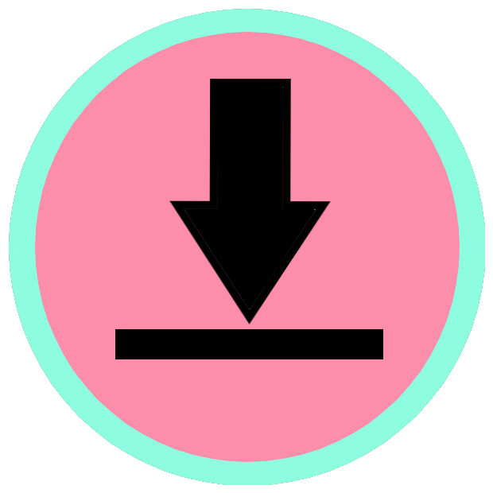
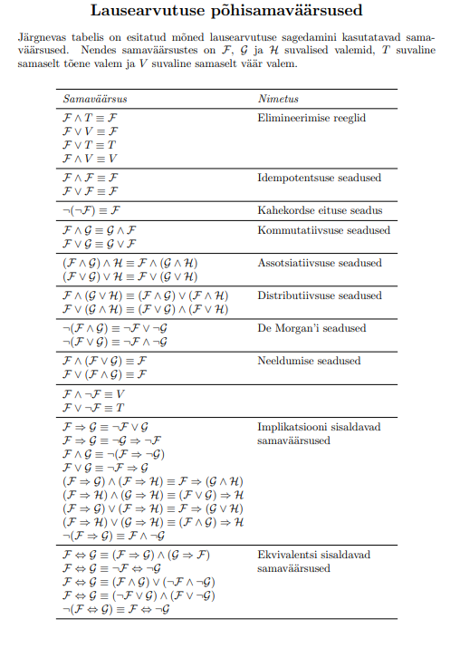

Üldine
Siit võid leida lingid eesti-inglise keelsele matemaatika sõnaraamatule kui ka "Diskreetse matemaatika" Youtube'i playlistile, kus on seletatud peaaegu kõiki teemasid, mida kursusel käsitletakse
Esimene pool kursusest
Pole kindel mida mõni loogika sümbol tähendab?
Väga põhjalik lausearvutuse kalkulaator
Ei saa aru kuidas arvutada erinevaid Venni diagrammi väärtusi?
Tabel kõigi samaväärsustega, mida kursuse jooksul vaja võib minna


Teine pool kursusest
Kollokviumi piletite materjale sisaldav fail
Induktsiooni seletav video
Ei saa aru mida tähendab funktsioon diskreetses matemaatikas?
Soovid kontrollida kas funktsioon on injektiivne või sürjektiivne?